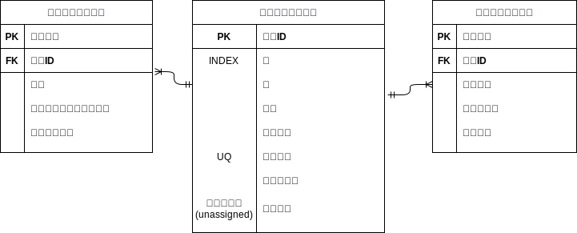
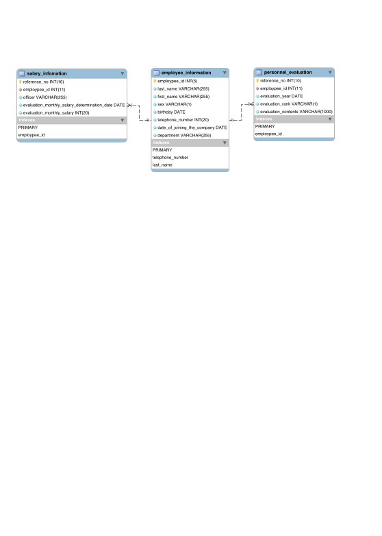

データベース構築演習¶
データベース構築上のSQLノウハウを活用したケーススタディ演習を実施します。
データベースの構築¶
仮想シナリオ¶
人事情報システム要件¶
- 社員情報を登録する・管理する
- 年次評価情報を管理する
- 給与情報を管理する
必要なデータを考える¶
- 社員データ
- 評価データ
- 給与データ
細かいデータ項目を設定する¶
- 社員データ
- 社員ID
- 姓
- 名
- 性別
- 入社年月日
ER図に落とし込む¶

その他¶
- 全ての項目にNOT NULL
- 外部キーは親テーブルが変更されたら、子テーブルにも反映されるように設定する
挿入データの日本語化¶
登録するデータを日本語化する場合は、
CREATE TABLE evaluations ( .... ) ENGINE=InnoDB DEFAULT CHARSET=utf8mb4;
人事情報データベースの作成¶
mysql> CREATE DATABASE personnel_infomation;
ERROR 2013 (HY000): Lost connection to MySQL server during query
No connection. Trying to reconnect...
Connection id: 941
Current database: orders
Query OK, 1 row affected (0.14 sec)
mysql> show databases;
+----------------------+
| Database |
+----------------------+
| information_schema |
| innodb |
| mysql |
| performance_schema |
| personnel_infomation |
| sys |
+----------------------+
7 rows in set (0.01 sec)
社員情報テーブルの作成¶
mysql> use personnel_infomation;
Database changed
mysql> CREATE TABLE employee_information(
-> employpee_id INT(5),
-> last_name VARCHAR(255) NOT NULL,
-> first_name VARCHAR(255) NOT NULL,
-> sex VARCHAR(1) NOT NULL,
-> birthday DATE NOT NULL,
-> telephone_number INT(20) NOT NULL,
-> date_of_joining_the_company DATE NOT NULL,
-> department VARCHAR(255) DEFAULT 'unassigned' NOT NULL,
-> PRIMARY KEY(employpee_id),
-> INDEX(last_name),
-> UNIQUE kEY(telephone_number)
-> ) ENGINE=InnoDB DEFAULT CHARSET=utf8mb4;
Query OK, 0 rows affected (0.03 sec)
mysql> DESC employee_information;
+-----------------------------+--------------+------+-----+------------+-------+
| Field | Type | Null | Key | Default | Extra |
+-----------------------------+--------------+------+-----+------------+-------+
| employpee_id | int(5) | NO | PRI | NULL | |
| last_name | varchar(255) | NO | MUL | NULL | |
| first_name | varchar(255) | NO | | NULL | |
| sex | varchar(1) | NO | | NULL | |
| birthday | date | NO | | NULL | |
| telephone_number | int(20) | NO | UNI | NULL | |
| date_of_joining_the_company | date | NO | | NULL | |
| department | varchar(255) | NO | | unassigned | |
+-----------------------------+--------------+------+-----+------------+-------+
8 rows in set (0.01 sec)
mysql> show index from employee_information;
+----------------------+------------+------------------+--------------+------------------+-----------+-------------+----------+--------+------+------------+---------+---------------+
| Table | Non_unique | Key_name | Seq_in_index | Column_name | Collation | Cardinality | Sub_part | Packed | Null | Index_type | Comment | Index_comment |
+----------------------+------------+------------------+--------------+------------------+-----------+-------------+----------+--------+------+------------+---------+---------------+
| employee_information | 0 | PRIMARY | 1 | employpee_id | A | 0 | NULL | NULL | | BTREE | | |
| employee_information | 0 | telephone_number | 1 | telephone_number | A | 0 | NULL | NULL | | BTREE | | |
| employee_information | 1 | last_name | 1 | last_name | A | 0 | NULL | NULL | | BTREE | | |
+----------------------+------------+------------------+--------------+------------------+-----------+-------------+----------+--------+------+------------+---------+---------------+
3 rows in set (0.01 sec)
人事評価テーブルの作成¶
mysql> use personnel_infomation;
Database changed
mysql> CREATE TABLE personnel_evaluation(
-> reference_no INT(10) AUTO_INCREMENT,
-> employpee_id INT NOT NULL,
-> evaluation_year DATE NOT NULL,
-> evaluation_rank VARCHAR(1) NOT NULL,
-> evaluation_contents VARCHAR(1000) NOT NULL,
-> PRIMARY KEY(reference_no),
-> FOREIGN KEY (employpee_id) REFERENCES employee_information(employpee_id) ON DELETE CASCADE
-> ) ENGINE=InnoDB DEFAULT CHARSET=utf8mb4;
Query OK, 0 rows affected (0.03 sec)
mysql> DESC personnel_evaluation;
+---------------------+---------------+------+-----+---------+----------------+
| Field | Type | Null | Key | Default | Extra |
+---------------------+---------------+------+-----+---------+----------------+
| reference_no | int(10) | NO | PRI | NULL | auto_increment |
| employpee_id | int(11) | NO | MUL | NULL | |
| evaluation_year | date | NO | | NULL | |
| evaluation_rank | varchar(1) | NO | | NULL | |
| evaluation_contents | varchar(1000) | NO | | NULL | |
+---------------------+---------------+------+-----+---------+----------------+
5 rows in set (0.01 sec)
給与情報テーブルの作成¶
mysql> use personnel_infomation;
Database changed
mysql> CREATE TABLE salary_infomation(
-> reference_no INT(10) AUTO_INCREMENT,
-> employpee_id INT NOT NULL,
-> officer VARCHAR(255) NOT NULL,
-> evaluation_monthly_salary_determination_date DATE NOT NULL,
-> evaluation_monthly_salary INT(20) NOT NULL,
-> PRIMARY KEY(reference_no),
-> FOREIGN KEY (employpee_id) REFERENCES employee_information(employpee_id) ON DELETE CASCADE
-> ) ENGINE=InnoDB DEFAULT CHARSET=utf8mb4;
Query OK, 0 rows affected (0.03 sec)
mysql> DESC salary_infomation;
+----------------------------------------------+--------------+------+-----+---------+----------------+
| Field | Type | Null | Key | Default | Extra |
+----------------------------------------------+--------------+------+-----+---------+----------------+
| reference_no | int(10) | NO | PRI | NULL | auto_increment |
| employpee_id | int(11) | NO | MUL | NULL | |
| officer | varchar(255) | NO | | NULL | |
| evaluation_monthly_salary_determination_date | date | NO | | NULL | |
| evaluation_monthly_salary | int(20) | NO | | NULL | |
+----------------------------------------------+--------------+------+-----+---------+----------------+
5 rows in set (0.01 sec)
MySQL Workbench で生成したRE図¶

データの挿入¶
社員情報テーブル¶
mysql> INSERT INTO employee_information VALUES
-> (1001,'佐藤','隆','m','060-9783-0193',20180401,19750808,'営業'),
-> (1002,'遠藤','真紀','w','060-8503-1284',20160401,19740808,'人事'),
-> (1003,'工藤','孝明','m','060-9874-6382',20100401,19720909,'開発');
Query OK, 3 rows affected, 3 warnings (0.02 sec)
Records: 3 Duplicates: 0 Warnings: 3
mysql> SELECT * FROM employee_information;
+--------------+-----------+------------+-----+------------+------------------+-----------------------------+------------+
| employpee_id | last_name | first_name | sex | birthday | telephone_number | date_of_joining_the_company | department |
+--------------+-----------+------------+-----+------------+------------------+-----------------------------+------------+
| 1001 | 佐藤 | 隆 | m | 0000-00-00 | 20180401 | 1975-08-08 | 営業 |
| 1002 | 遠藤 | 真紀 | w | 0000-00-00 | 20160401 | 1974-08-08 | 人事 |
| 1003 | 工藤 | 孝明 | m | 0000-00-00 | 20100401 | 1972-09-09 | 開発 |
+--------------+-----------+------------+-----+------------+------------------+-----------------------------+------------+
人事評価テーブル¶
mysql> INSERT INTO personnel_evaluation(employpee_id, evaluation_year, evaluation_rank, evaluation_contents) VALUES
-> (1001,2019, 'A','非常に優秀でした。'),
-> (1002,2019, 'B','良かったです。'),
-> (1003,2019, 'E','今後の改善が必要です。');
Query OK, 3 rows affected, 3 warnings (0.01 sec)
Records: 3 Duplicates: 0 Warnings: 3
mysql> SELECT * FROM personnel_evaluation;
+--------------+--------------+-----------------+-----------------+-----------------------------------+
| reference_no | employpee_id | evaluation_year | evaluation_rank | evaluation_contents |
+--------------+--------------+-----------------+-----------------+-----------------------------------+
| 1 | 1001 | 0000-00-00 | A | 非常に優秀でした。 |
| 2 | 1002 | 0000-00-00 | B | 良かったです。 |
| 3 | 1003 | 0000-00-00 | E | 今後の改善が必要です。 |
+--------------+--------------+-----------------+-----------------+-----------------------------------+
3 rows in set (0.01 sec)
給与情報テーブル¶
mysql> INSERT INTO salary_infomation -> (employpee_id, officer, evaluation_monthly_salary_determination_date, evaluation_monthly_salary)
-> VALUES
-> (1001,'営業担当',20190301,200000),
-> (1002,'リーダー',20190301,250000),
-> (1003,'係長',20190301,300000);
Query OK, 3 rows affected (0.01 sec)
Records: 3 Duplicates: 0 Warnings: 0
mysql> SELECT * FROM salary_infomation;
+--------------+--------------+--------------+----------------------------------------------+---------------------------+
| reference_no | employpee_id | officer | evaluation_monthly_salary_determination_date | evaluation_monthly_salary |
+--------------+--------------+--------------+----------------------------------------------+---------------------------+
| 1 | 1001 | 営業担当 | 2019-03-01 | 200000 |
| 2 | 1002 | リーダー | 2019-03-01 | 250000 |
| 3 | 1003 | 係長 | 2019-03-01 | 300000 |
+--------------+--------------+--------------+----------------------------------------------+---------------------------+
3 rows in set (0.01 sec)